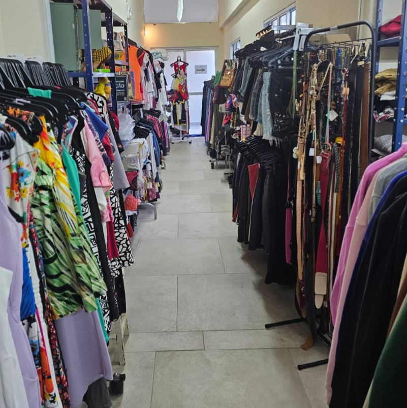
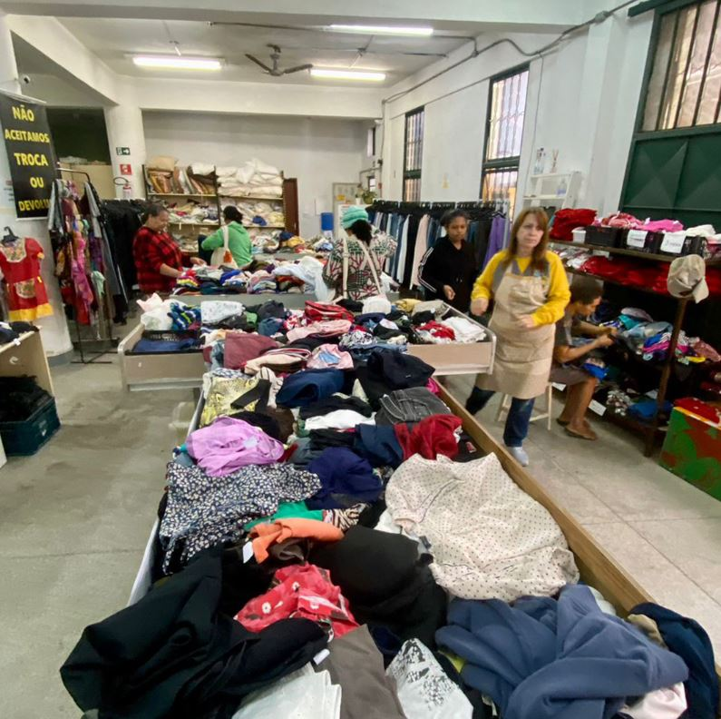
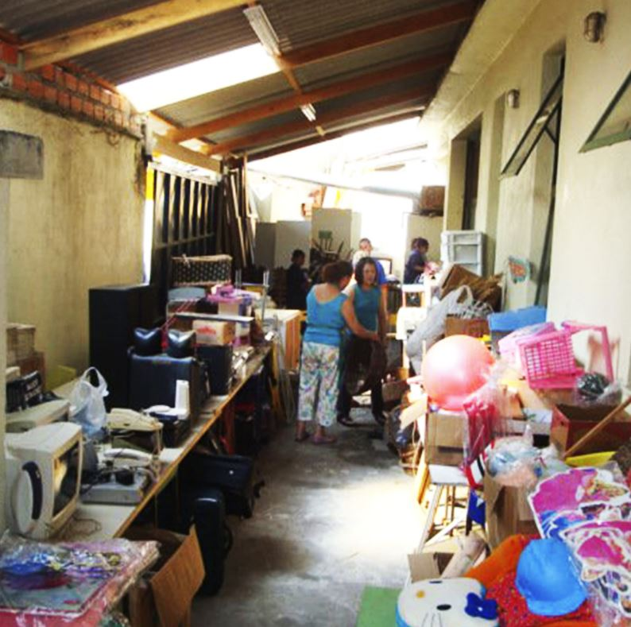

Brechó Solidário
Consumo consciente e solidariedade a favor das causas sociais do Complexo Assistencial Cairbar Schutel.
Sobre o Brechó do CACS
Bem-vindo ao Brechó do CACS, um espaço onde consumo consciente e solidariedade se encontram! Aqui, cada peça tem uma nova história para contar e você faz parte dessa transformação. Acreditamos na economia circular como caminho para um futuro mais sustentável: ao dar nova vida a roupas, calçados, acessórios, brinquedos, móveis e eletrodomésticos, reduzimos o impacto ambiental e promovemos um consumo mais responsável e criativo.
Quando você compra no nosso brechó, você ganha duas vezes: encontra itens únicos e de qualidade a preços acessíveis e, ao mesmo tempo, contribui diretamente para os projetos sociais do CACS|Complexo Assistencial Cairbar Schutel. Toda a renda é 100% revertida para nossas ações, que acolhem, cuidam e transformam vidas na comunidade. Seu consumo consciente se transforma em assistência, educação e esperança.
Venha nos visitar e descubra tesouros escondidos que esperam por você! Aqui, cada escolha é um ato de amor – pelo planeta, pelas pessoas e por um futuro mais justo. Juntos, construímos uma corrente do bem que não se esgota.
A renda reverte integralmente para os projetos do CACS|Complexo Assistencial Cairbar Schutel.



NOSSOS PRODUTOS
Artigos usados e seminovos como roupas, calçados, acessórios, bijuterias, brinquedos móveis e eletrodomésticos.
ENDEREÇO E HORÁRIO DE FUNCIONAMENTO
📍 Endereço:
Rua Francisco Preto, 213 – Vila Morse
São Paulo/SP
🕒 Horário de Funcionamento:
De terça a sexta, das 8h às 16h30
📞 Contato:
Tel: (11) 3742-0516
Cel: (11) 91059-8421
QUER DOAR?
O brechó depende da sua solidariedade. Se você tem em casa roupas que já não usa mais, objetos de decoração ou até mesmo móveis em bom estado, venha trazer até nós.
Tudo o que se encontra em condição de uso pode se tornar recurso valioso e esperança de futuro para as iniciativas do CACS.
Fale com a gente sobre sua doação